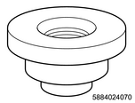
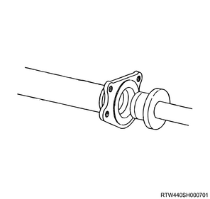
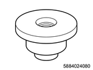
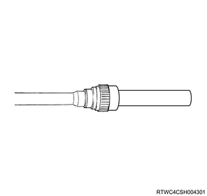
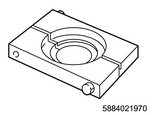
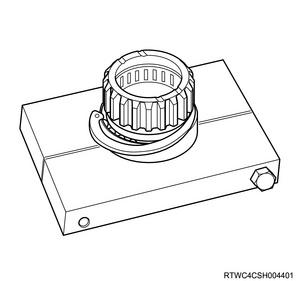
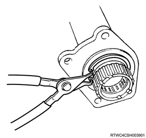
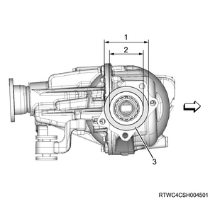
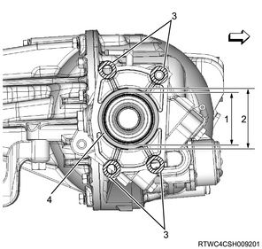

Shift on the fly system reassembly (All models)
1. Oil seal installation
1. Install the oil seal to the axle case using special tool.
Note
- By using an oil seal installer and grip, install a new oil seal that was soaked in differential gear oil to the front axle case.

SST: 5-8840-2407-0 - installer: oil seal

SST: 5-8840-0007-0 - grip

2. Needle bearing installation
1. Install the needle bearing to the inner axle shaft using special tool.
Note
- Push using a needle bearing installer and grip.

SST: 5-8840-2408-0 - installer: bearing needle
SST: 5-8840-0007-0 - grip

3. Inner shaft bearing installation
1. Install the bearing to the inner shaft using special tool.
Note
- Install the inner shaft bearing to the inner shaft.
- Install a new snap ring to the inner shaft.
- Install a new inner shaft bearing to the inner shaft using a separator.

SST: 5-8840-2197-0 - separator

4. Inner axle shaft installation
1. Install the snap ring to the inner shaft.
Caution
- Be careful not to damage the inner shaft.
2. Install the inner axle shaft to the axle case.
Note
- Clean the housing contact surface of the front axle case.
- Insert the inner shaft assembly into the front axle case.
Caution
- Be careful not to damage the shaft.
3. Install the snap ring to the axle case.
Note
- Install it to the groove of the front axle case.
Caution
- Be careful to install a snap ring properly.

5. Clutch gear installation
1. Apply the front axle differential oil to the clutch gear.
2. Install the clutch gear to the axle shaft.
6. Sleeve installation
1. Apply the front axle differential oil to the sleeve.
2. Install the sleeve to the axle shaft.
7. Housing installation
1. Install the housing to the axle case.
Note
- Remove the old sealing agent, and then clean the contact surfaces of the front axle and actuator.
- Apply LOCTITE FMD-127 or equivalent to the contact surface of the front axle case and install the housing.

- Diameter 106 mm (4.17 in)
- Diameter 83 mm (3.27 in)
- LOCTITE FMD-127 application range
Note
- Remove the old sealing agent adhering to the bolt and remaining in the screw hole. Then apply LOCTITE FMD-127 or equivalent to the threaded portion and tighten the bolt at the specified torque.
Tightening torque： 75 N・m { 7.6 kgf・m / 55 lb・ft }
8. Actuator installation
1. Install the actuator to the housing.
Note
- Remove the old sealing agent, and then clean the contact surfaces of the housing and actuator.
- Apply LOCTITE FMD-127 or equivalent to the contact surface on the actuator side.

Note
- Align the shift arm with the sleeve groove and install the actuator.
- Remove the old sealing agent adhering to the bolt and remaining in the screw hole. Then apply LOCTITE FMD-127 or equivalent and tighten the bolt at the specified torque.
Tightening torque： 9 N・m { 0.9 kgf・m / 80 lb・in }

9. Drive shaft assembly installation
1. Install the drive shaft to the axle case.
Note
- Install the right side front axle drive shaft and mounting bracket.
- Remove the old sealing agent adhering to the bolt and remaining in the screw hole. Then apply LOCTITE FMD-127 or equivalent and tighten the fixing bolt at the specified torque.
Tightening torque： 88 N・m { 9.0 kgf・m / 65 lb・ft }

- Diameter 63.5 mm (2.50 in)
- Diameter 82 mm (3.23 in)
- Section where application of LOCTITE FMD-127 is inhibited
- LOCTITE FMD-127 application range
10. Front axle differential oil filling
1. Install the drain plug to the axle case.
Note
- Use a new gasket.
- Pass through the gasket, install, and tighten to the specified torque.
Tightening torque： 50 N・m { 5.1 kgf・m / 37 lb・ft }
2. Fill the front axle differential oil in the axle case.
Note
- Pour in the specified amount of differential oil GL5.
Capacity： 1.24 L { 0.33 US gal / 0.27 Imp.gal }
3. Install the filler plug to the axle case.
Note
- Use a new gasket.
- Pass through the gasket, install, and tighten to the specified torque.
Tightening torque： 50 N・m { 5.1 kgf・m / 37 lb・ft }